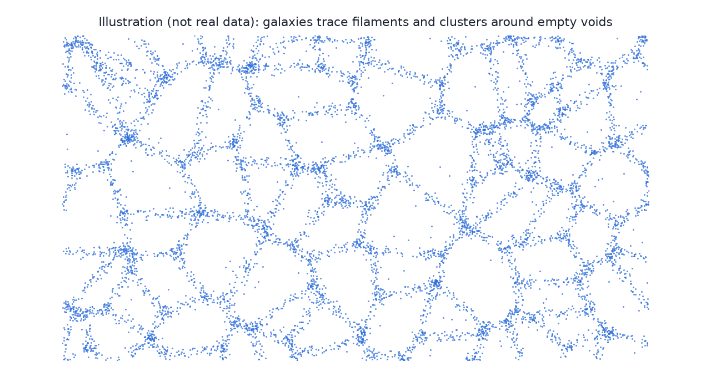

In this lesson you will learn
|
Islands of stars
A galaxy is a huge system of stars, gas, dust and dark matter held together by gravity. The smallest dwarf galaxies contain a few thousand to a few million stars; the largest giants contain more than a trillion. Estimates of the number of galaxies in the observable universe range from hundreds of billions to about two trillion, depending on how many faint dwarf galaxies are counted.
Types of galaxies
In 1926 Edwin Hubble sorted galaxies by their appearance. His scheme, the Hubble sequence or "tuning fork", is still used today:
| Type | Appearance | Stars and gas |
|---|---|---|
| Elliptical (E) | Smooth, round to elongated, no disk | Mostly old, red stars; little cold gas; few new stars |
| Lenticular (S0) | Disk and bulge but no spiral arms | Old stars, little gas |
| Spiral (S) | Flat disk with spiral arms and a central bulge | Young blue stars in the arms, lots of gas and dust |
| Barred spiral (SB) | Spiral whose arms start from a central bar | Like spirals; the Milky Way is one |
| Irregular (Irr) | No regular shape | Often gas-rich and actively forming stars |
Colour tells age Hot, massive stars are blue but live only a few million years. A blue galaxy is therefore forming stars now, while a red galaxy has mostly stopped. Astronomers call them "blue cloud" and "red sequence" galaxies. |
Our galaxy: the Milky Way
The Milky Way is a barred spiral about 100 000 light-years across, containing some 100 to 400 billion stars. Its main parts are:
- a thin disk with spiral arms, where the Sun orbits about 26 000 light-years from the centre, taking roughly 230 million years per orbit;
- a central bar and bulge of older stars;
- a faint, roughly spherical stellar halo containing old globular clusters;
- a much larger dark matter halo that contains most of the galaxy's mass (lesson L3.2).
At its very centre sits Sagittarius A*, a supermassive black hole with about four million times the mass of the Sun. The Event Horizon Telescope imaged its shadow in 2022.
Black holes at the heart of galaxies Almost every large galaxy has a supermassive black hole at its centre. When gas falls onto it, it can outshine the whole galaxy as an active galactic nucleus or quasar. Quasars are so bright that they are seen at redshifts above 7, less than a billion years after the Big Bang. |
Groups and clusters
Galaxies are rarely alone.
- Groups contain up to about 50 galaxies. The Milky Way belongs to the Local Group, about 3 Mpc across, dominated by the Milky Way and the Andromeda galaxy. The two are approaching each other at about 110 km/s and may merge several billion years from now.
- Galaxy clusters contain hundreds to thousands of
galaxies and have total masses of –
 solar masses. The nearest
large one, the Virgo Cluster, lies about 16.5 Mpc away; the rich Coma
Cluster about 100 Mpc away.
solar masses. The nearest
large one, the Virgo Cluster, lies about 16.5 Mpc away; the rich Coma
Cluster about 100 Mpc away.
Clusters are the largest objects held together by their own gravity. The space between their galaxies is filled with gas at – K, so hot that it shines in X-rays. As you will see in lesson L3.2, clusters are also dominated by dark matter.
Superclusters and the cosmic web
On even larger scales, groups and clusters are arranged in superclusters. In 2014 astronomers mapped the motions of thousands of galaxies and defined our home supercluster, Laniakea ("immense heaven" in Hawaiian): about 160 Mpc across, containing roughly 100 000 galaxies flowing towards a region called the Great Attractor.
Superclusters are not isolated islands. Galaxies are arranged in a gigantic three-dimensional pattern, the cosmic web:
- Filaments: long threads of galaxies tens of megaparsecs long;
- Walls or sheets: flattened structures;
- Clusters at the intersections of filaments;
- Voids: vast, nearly empty regions typically 10–100 Mpc across that fill most of the volume of the universe.

Mapping the universe in 3D
A photograph shows galaxies only as positions on the sky. To see the web, we need their distances. The Hubble–Lemaître law (lesson L1.2) makes this possible: measure a galaxy's redshift and you know roughly how far away it is. Such redshift surveys turned flat pictures into 3D maps.
The "stickman" of 1986 In 1986 Valérie de Lapparent, Margaret Geller and John Huchra of the CfA Redshift Survey plotted a thin slice of about 1 100 galaxies. Instead of a random scatter they found bubbles and walls, with a cluster in the middle shaped like a stick figure. Later surveys, the 2dF Galaxy Redshift Survey, the Sloan Digital Sky Survey and today's Dark Energy Spectroscopic Instrument, mapped millions to tens of millions of galaxies and confirmed the web. |
How big is the largest structure?
If galaxies formed structures on all scales, the universe would never look smooth. Surveys show that the web has a characteristic size: in cubes more than about 100–300 Mpc across, the number of galaxies is nearly the same everywhere. This is the observational basis of the cosmological principle (lesson L1.3).
Where did the web come from? The cosmic web grew from tiny density differences in the early universe. Regions slightly denser than average pulled in more matter through gravity, while underdense regions emptied into voids. Dark matter formed the scaffolding and ordinary matter followed it. Computer simulations of this process reproduce the observed web in remarkable detail. |
Try it: Powers of Ten Zoom Zoom out past the Milky Way, the Local Group and Laniakea to the scale where the cosmic web becomes uniform. |
Remember this
|